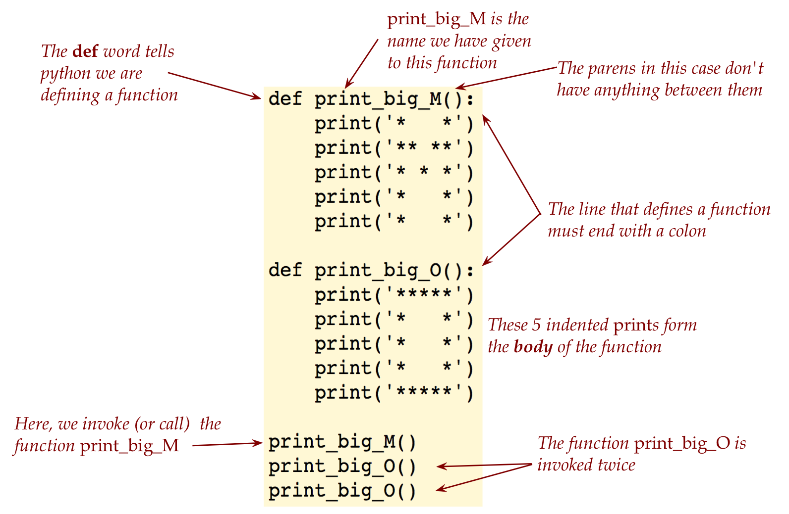
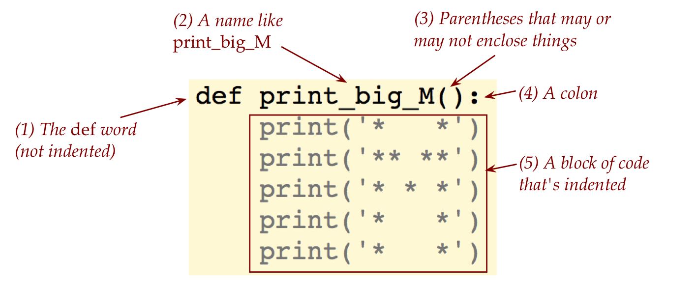
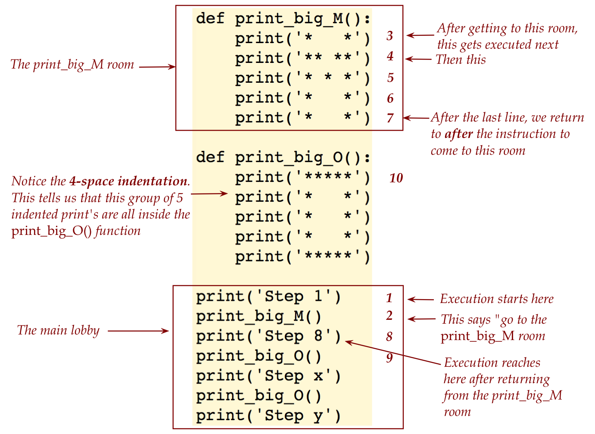
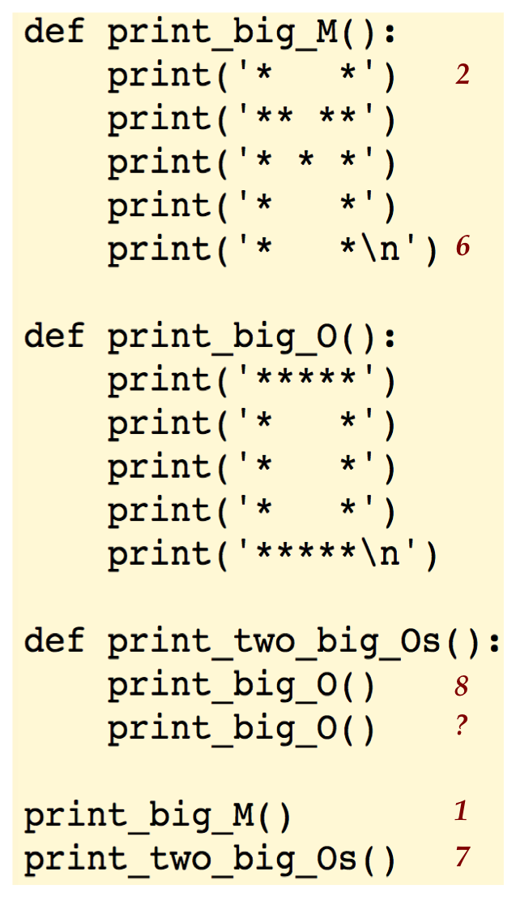
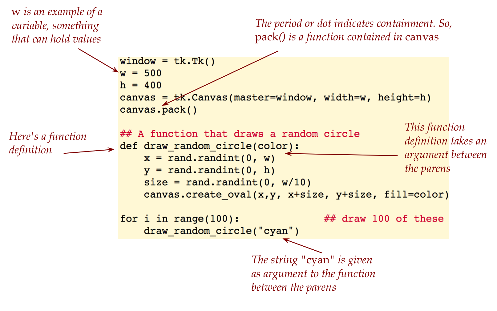
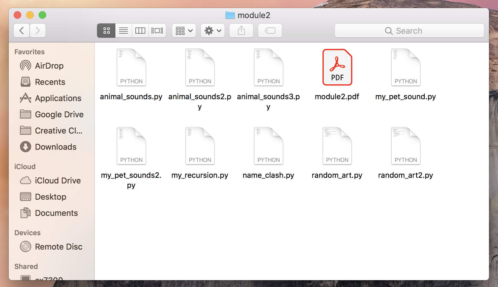
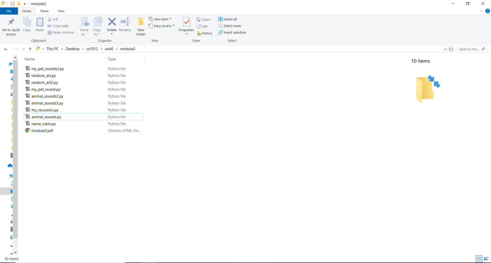

Module 2: Functions: a first look
Objectives
By the end of this module, for simple HelloWorld-like programs, you will be able to:
- Demonstrate function calls.
- Use mental tracing to identify output without execution.
- Add numbered comments to show an execution trace.
- Identify and correct syntax errors related to the above objectives.
2.0 An example with function calls
Consider the following program:
# define a function we'll use later
def print_big_M():
print('* *')
print('** **')
print('* * *')
print('* *')
print('* *')
# define another one we'll use later
def print_big_O():
print('*****')
print('* *')
print('* *')
print('* *')
print('*****')
# Print MOO using the above defined functions
print_big_M()
print_big_O()
print_big_O()2.1 Excercise: Type up the above in animal_sounds.pyand run it. Also save the file so that it can be submitted (You will need to save the appropriate files for everysuch “type up” exercise).
Let’s point out a few things: 
Let’s start by distinguishing between a function definition (which uses
defand merely tells Python what the function is about), and invocation (which asks Python to execute the function at that moment).- A function definition is a piece of code that begins with the word
def - A function definition is sometimes also called function declaration.
- A function definition does not execute the code immediately.
- Instead it’s like saving in one place a bunch of instructions that can be invoked with just the name of the function.
- This saves writing lots of code if a group of code can begiven a name (in this case, a function name).
- A function definition is a piece of code that begins with the word
A function definition has 5 elements: 
A function with a given name is defined just once.
A function invocation merely uses the name, along with parentheses:
print_big_M()We’ll later see examples where some things can go between the parens.
While a particular function is defined once, it can be used any number of times:
- In fact, that is the whole purpose of defining functions.
- Each use of a function is a single line of code, which saves us the trouble of rewriting all the code that was inside the function for each time we need it.
Function definitions also help isolate code so that one doesn’t have to see or understand what’s inside to use it.
We’ve already used such a function before: the
printfunction.- The
printfunction is defined internal to Python. - We don’t type its definition, nor do we see it.
- We just use it as often as we like.
- The
Important: Please pay careful attention to indentation
- The line that begins with
defshould NOT be indented. - Other lines that belong to the function should be indented.
- There are other forms of indentation that we’ll point out as we proceed - they’re all important.
- The line that begins with
2.2 Video:
2.3 Exercise: Write your own animal sound that uses one function at least thrice with an exclamation mark at the end, e.g. print the big version of BAAA!. Write your code in my_pet_sound.py. Once your program is working, say the sound out aloud to celebrate. (Why not?)
Next, let’s see how functions “work” by making a small change to the program:
def print_big_M():
print('* *')
print('** **')
print('* * *')
print('* *')
print('* *')
def print_big_O():
print('*****')
print('* *')
print('* *')
print('* *')
print('*****')
print('Step 1')
print_big_M()
print('Step 8')
print_big_O()
print('Step x')
print_big_O()
print('Step y')2.4 Exercise: Type up the above in animal_sounds2.py and run it.
Let’s explain using an analogy: 
We’ll use the analogy of a house to describe a program and its parts (the functions).
A program’s execution starts at the very top.
In the above case, there are a number of definitions:
- Definitions are merely “processed” but not executed.
- It’s understood that the definitions may be invoked later.
- In our house analogy, we walk past these “rooms” to the main lobby.
The first real line of code is the
print('Step 1')statement.- Think of this section of code as the “main lobby”.
After this, we see the line (also a command)
print_big_M()- This is an instruction that causes the computer to “go to the
print_big_M()room”. - We then head to that room and start executing commands in there.
- This is an instruction that causes the computer to “go to the
Thus, the third command that gets executed is
print('* *')We’re still in the room with more commands to go, and the next one (4th so far) is
print('** **')Continuing, we execute the last line in the room, which will make this the 7th one executed.
After we leave the “room”, and this is important, we continue execution after the invocation that brought us to the room.
2.5 Exercise: Type up the above in animal_sounds2.py and run it.
At which step (which step number) do we execute the last line in print_big_O? And then, at which step do we enter print_big_O the second time and print its first line? In animal_sounds2.py replace x and y with the correct step number. Don’t forget: non-coding responses to exercises go into module2.pdf (one PDF per module).
2.6 Video:
2.1 Calling functions from other functions
Consider this program:
def print_big_M():
print('* *')
print('** **')
print('* * *')
print('* *')
print('* *\n')
def print_big_O():
print('*****')
print('* *')
print('* *')
print('* *')
print('*****\n')
def print_two_big_Os():
print_big_O()
print_big_O()
print_big_M()
print_two_big_Os()- Yes, we can write our functions that call our own functions.
- Incidentally, did you notice the escape sequences?
⇒ We improved the output.
2.7 Exercise: Type up the above in animal_sounds2.py and run it.
Use this idea to rewrite your own animal sound in a file called my_pet_sound2.py. That is, add an additional function to your earlier program my_pet_sound.py that is analogous to print_two_big_Os() above.
- Once again, let’s trace through some steps: 
2.8 Exercise: Look at the example above. What step number is represented by the question mark (?) next to the second print_big_O() inside the print_two_big_Os() function? What line in the program represents step 15? Write your answer in module2.pdf. Remember: if it’s not clear where to write your answer, write it in your module pdf (for this module that’s module2.pdf).
2.9 Video:
- Mental execution:
- We will use the term mental execution for the above exercise of tracing through the execution without actually compiling and running the program.
Mental execution is extremely important in developing programming skill
⇒ Please be sure to practice this with every program you read or write.
- We can’t emphasisize this enough. Really.
- Remember:
- Execution starts at the top of a program and goes downwards.
- Function definitions are processed (understood) but not executed.
- When a function are invoked, execution “goes” into the function to execute the code in there.
2.2 More about functions
About function names:
- Consider the function name
print_big_M. - This is a name we chose.
- We could just as easily have called it
my_crazy_function:
def <b>my_crazy_function</b>():
print('* *')
print('** **')
print('* * *')
print('* *')
print('* *\n')
def print_big_O():
print('*****')
print('* *')
print('* *')
print('* *')
print('*****\n')
def print_two_big_Os():
print_big_O()
print_big_O()
# Use the different name:
my_crazy_function()
print_two_big_Os()- In other words, the compiler does not look into the English meaning of function names.
- We choose function names to help us read programs.
Beware of name clashes: - Consider the following program (that has a mistake):
def print_big_M():
print('* *')
print('** **')
print('* * *')
print('* *')
print('* *\n')
def print_big_M(): # A mistake! We meant to have typed
print('*****') # print_big_O()
print('* *')
print('* *')
print('* *')
print('*****\n')
# What happens now?
print_big_M()- In this example, we have functions with different content but with the same name.
2.10 Exercise: Implement the above in name_clash.py and describe what happens in module2.pdf.
- What we see is that the second definition replaces the first.
- The program runs but this error is not identified as such by the language. Instead, we need to be careful not to unintentionally make such a mistake.
The order of function invocation matters. For example, consider:
def print_big_M():
print('* *')
print('** **')
print('* * *')
print('* *')
print('* *\n')
def print_big_O():
print('*****')
print('* *')
print('* *')
print('* *')
print('*****\n')
def print_two_big_Os():
print_big_O()
print_big_O()
# We've changed the order here:
print_two_big_Os()
print_big_M()2.11 Exercise: Describe in your module pdf how the output would be different, first without typing up the program, and then typing it up in animal_sounds3.py.
2.3 A peek at the future
Once again, we will present a small program with features yet to be explained, by way of getting you comfortable and yet curious.
Here’s the program:
import tkinter as tk
import random as rand
window = tk.Tk()
w = 500
h = 400
canvas = tk.Canvas(master=window, width=w, height=h)
canvas.pack()
# A function that draws a random circle
def draw_random_circle(color):
x = rand.randint(0, w)
y = rand.randint(0, h)
size = rand.randint(0, w/10)
canvas.create_oval(x,y, x+size, y+size, fill=color)
# draw 100 circles
for i in range(100):
draw_random_circle("cyan")
# Standard colors: "black", "red", "green", "blue",
# "cyan", "yellow", "magenta"
window.mainloop()2.12 Exercise: Type up the above program in random_art.py and execute it.
Now let’s point out a few features: 
2.13 Exercise: Use the same code in random_art2.py and then add and modify it to create your own art, and include a screenshot in module2.pdf. When you quit your program, instead of x-ing out the window, type control-c (“control” key and “c” key pressed together) while the cursor is in the output window.
About control-c
- The standard keyboard has some keys that act together with other keys, in effect modifying them.
- The shift key is the most obvious one: pressing the shift key along with another key either capitalizes a letter or types the symbol “above” in a two-symbol key. For example, the ampersand & is “above” 7 on the same key as 7; thus, pressing shift and 7 achieves typing &
- On a Mac, you’ve probably used the command key, and on Windows, you’ve used control.
- The control key, when used with other keys is often used in programming contexts.
- One such case is to use control-c (control and c together) to terminate the execution of a program.
- However, to do this, you first need to click into wherever the program is executing. This is typically the output window (where the output appears).
2.14 Video:
2.4 And now for something strange
Consider the following program:
def print_big_M():
print('* *')
print('** **')
print('* * *')
print('* *')
print('* *\n')
def print_big_O():
print('*****')
print('* *')
print('* *')
print('* *')
print('*****\n')
print_big_O() # We're invoking the function from within
print_big_M()
print_big_O()2.15 Exercise: Mentally execute the above program. That is, without typing it up, try to follow how the program executes, step by step Which statement gets executed in the 10-th step of execution? Do you notice anything unusual at step 13? As a result, what line is executed in step 15? Write your answer in your module pdf (module2.pdf).
2.16 Exercise: Before doing this exercise, please read this page on how to stop endlessly running programs. Now, type up and execute the above program in my_strange_example.py. What do you notice? (Or you might get an “recursion depth exceeded” error.)
The term recursion is used when function calls itself: - In the above example, it’s an obvious error
⇒ Nothing useful is accomplished.
Later, we’ll learn to use recursion to solve problems.
In fact, recursion is one of the most powerful computational problem-solving paradigms.
2.17 Video:
2.5 Another reminder about computerese
How is your computerese coming along? Are you now much more confident with folders, files, zip files and such? What about editing, and saving?
Don’t forget that you can always review the material on computerese from Module 0.
Please check that your module2 folder has the right files before you zip and upload. Does it look like one of these sample screenshots:

or

?